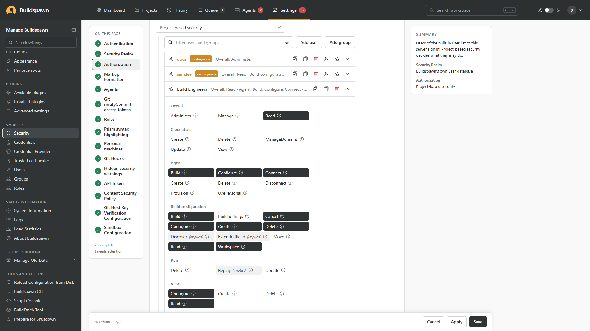

Authorization
Authorization decides what each person may see and do, once the security realm has said who they are.
When to use it
You set the authorization strategy when you set up the server, and again when you want to give a team its own rights. For a studio with several teams, choose Project-based security and use roles. For a small server, Matrix-based security is enough. If people sign in with Entra ID, choose Entra ID Matrix-based security.
How to set it up
- Open Settings › Security. You need Administer.
- Find the section Authorization and open the drop-down.
- Pick a strategy (see the next section).
- For a matrix strategy, click Add user or Add group, type the name, and tick permissions on the card (see Permission cards).
- Make sure your own user or group has Administer. Then click Save.
If you save a matrix without Administer for yourself, you lose access to Settings. The recovery steps are on Security realms.

The strategies
| Strategy | What it does | Use it when |
|---|---|---|
| Anyone can do anything | No checks. Everyone, even people who are not signed in, has full control. | A private test on one computer, or a trusted network where people only need a profile. |
| Legacy mode | The old behaviour. Whoever has the role admin has full control. Everyone else, including anonymous visitors, can only read. | You need to keep the behaviour of a very old setup. Prefer a matrix. |
| Logged-in users can do anything | Every signed-in user has full control. A visitor who is not signed in only reads. The checkbox Allow anonymous read access says whether they may read at all. It is on by default. A warning says to use it only if every signed-in user is fully trusted. | A small, trusted team that wants to know who did what. |
| Matrix-based security | One list of permission cards for the whole server. Each card is one user or one group. | You want exact control, and the same rights on every project. |
| Project-based security | The server list, plus a list on each project and a Roles tab. Rights given on a project apply to everything inside it. | Several teams, each with its own project. The right choice for most studios. |
| Entra ID Matrix-based security | A matrix that finds users and groups in your Entra ID directory. See Entra ID sign-in. | The security realm is Entra ID. |
| Old Entra ID Matrix-based security (do not use) | An earlier form of the Entra ID matrix, kept so that old settings load. It is not recommended. | Never for a new setup. If you have it, switch to Entra ID Matrix-based security and add the cards again. |
Changing the strategy does not delete users. It only changes who may do what.
Permission cards
The matrix strategies show one card for each user or group. A card is a bar with the name, a short summary of what is allowed, three small buttons, and an arrow. Click the bar to open the card and see every permission, grouped by area.

| Part of the card | What it does |
|---|---|
| Name | The user or group. A group has two small people in its icon, a user has one. |
| Summary | A one-line list of what is ticked. No permissions granted shows when nothing is. |
| Grant all | Ticks every permission for this card. |
| Remove all | Clears every permission on this card. |
| Bin | Removes the card. The built-in cards Anonymous and Authenticated Users have no bin. |
| Open card | The permissions are grouped: Overall, Credentials, Agent, Build configuration, Run, View, SCM and Perforce. Hover over the help icon beside a permission to read what it allows. |
| implied | A permission can be granted by another one. For example Administer grants all others. The implied ones show as ticked and say (implied). You can not clear them without clearing the one that grants them. |
Above the cards:
- Filter users and groups hides cards that do not match what you type.
- The funnel button, Filter by permission, shows only the cards that hold the permissions you pick. Reset clears it.
- Add user and Add group make a new card. In the dialog you can search users and groups that Buildspawn knows (Search by ID or name). If your realm does not list its people, type the name exactly as the realm has it.
The two special cards
| Card | Who it is |
|---|---|
| Anonymous | People who are not signed in. |
| Authenticated Users | Everybody who is signed in. It is the same as the group All users. Give it Read under Overall, so that every signed-in person can open the server and find the projects they were given. |
Ambiguous names
A name that could be a user and also a group gets a yellow ambiguous label, and a warning appears above the cards. If your realm lets people choose their own user names or create groups, one could get extra rights. Use the two buttons on the card, Migrate ambiguous permissions assignment to user or to group, to make it exact. A monitor on the Settings overview lists every ambiguous entry.
Project-based security
With this choice you still have the server cards. In addition, every project has a Roles tab with:
- the roles given on that project (see Roles), and
- a Full permission grid for rights that roles cannot express and for the inheritance choice.
A person gets what any of the cards, roles or grids allows. Nothing here takes a right away, except the inheritance choice below.
Inheritance strategy
A project’s grid has an Inheritance Strategy. It says which rights the project takes from above.
| Choice | What it means |
|---|---|
| Inherit permissions from parent ACL | The project keeps its own cards and also gets every right of the project above it. At the top level, the server cards apply. This is the usual choice. |
| Inherit globally defined permissions | The project gets the server cards directly, but not rights given on projects above it. |
| Do not inherit permission grants from other ACLs | Only the cards of this project count. To stop people being locked out, system administrators (Administer) still have access. |
On a project’s Roles tab a note says This project blocks inheritance when this choice is used.
People also need Read on every project above the one they work in, and Read under Overall, to reach it. Give Authenticated Users Overall › Read and then use roles for the rest.
Entra ID Matrix-based security
It has the same cards, filters and buttons. The difference is the Add from Entra ID row: a people picker that searches your directory, and a button Add. It is explained on Entra ID sign-in.
Every permission
Hover over the help icon on a card to see the same text in Buildspawn. Some permissions do not appear on the card, because other permissions already grant them.
Overall
| Permission | What it allows |
|---|---|
| Administer | Everything. System-wide settings and the most sensitive actions. |
| Manage | Change parts of the system settings that cannot harm the stability or security of the server. |
| Read | See almost every page. Take it from Anonymous and give it to Authenticated Users if only signed-in people may look. |
| Configure update center, Run scripts, Upload plugins | Old permissions. Use Administer instead. |
Credentials
| Permission | What it allows |
|---|---|
| Create | Add credentials to a store. |
| Update | Change credentials. |
| View | See the stored credentials in the list (not the secrets). |
| Delete | Remove credentials. |
| ManageDomains | Create, change and delete credential domains. |
Agent
| Permission | What it allows |
|---|---|
| Build | Run build configurations on agents as that user. |
| Configure | Change agents. |
| Connect | Connect agents, or mark them online. |
| Create | Add agents. |
| Delete | Delete agents. |
| Disconnect | Disconnect agents, or mark them temporarily offline. |
| Provision | Start new agents from a cloud. |
| UsePersonal | Add your own machine and run your builds on it. See Personal agents. |
Build configuration
| Permission | What it allows |
|---|---|
| Read | See a build configuration. |
| Discover | Lower than Read. Anonymous visitors who open the address are sent to the sign-in page instead of getting a “not found” error. |
| ExtendedRead | Read the settings. Secrets in builds may become visible, so give it with care. |
| Build | Start a build. |
| Cancel | Cancel a waiting build or stop a running one. |
| Workspace | Browse and download the files in the workspace of a build. |
| Configure | Change the build configuration. |
| BuildSettings | Change the steps, publishers, wrappers and parameters a project passes on to the build configurations below it. Only Administer implies it, because these run in every build configuration below. |
| Create | Create a new build configuration. |
| Delete | Delete a build configuration. |
| Move | Move a build configuration from one project (or the top) to another. |
Run
| Permission | What it allows |
|---|---|
| Delete | Delete a build from the history. |
| Update | Change the description and other properties of a build, for example to leave a note about a failure. |
| Replay | Run a Pipeline build again with a changed script. |
View, SCM and Perforce
| Permission | What it allows |
|---|---|
| View: Read | See views. |
| View: Create, Configure, Delete | Make, change and delete views. |
| SCM: Tag | Tag the sources of a build in version control. |
| Perforce: UseAdministratorConnection | Use the administrator connection to Perforce. |
A worked example
The studio chooses Project-based security. In the server matrix, Authenticated Users gets Overall › Read, and the group Admins gets Administer. The art team’s project HT3 has a role Developer for the group ht3-artists. The art team sees the server, can open HT3, run its builds, and sees nothing else that it was not given.
What you see when it runs
- People without a permission do not see the buttons for it. Pages they may not read answer with Page not found or send them to sign in.
- The Summary card on the Security page names the realm and the strategy.
- The card summary lists what each user or group has.
Problems and fixes
| Problem | What to do |
|---|---|
| You lost access to Settings after saving. | See the recovery steps on Security realms. Next time add yourself with Administer before you save. |
| Someone signs in and sees an empty server. | Give Authenticated Users Overall › Read. |
| A project has no Roles tab. | The strategy is not Project-based security. |
| A permission cannot be cleared. | It is implied by another one on the same card. Clear that one first. |
| A card says ambiguous. | Use the user or group button on the card to make it exact. |
| A grant does nothing. | The name does not exist in the realm. Remove the card and add it again by search. |